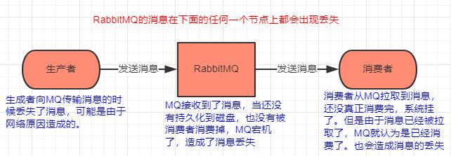

消息中间件如何解决消息丢失问题
怎么样保证消息不丢失，从生产者生产出一条消息开始，一直到消费者成功消费该消息，中间不能丢失消息。这个问题也是使用MQ必须要考虑的。
RabbitMQ出现消息丢失的情况及其解决办法：

RabbitMQ丢失消息的情况可以发送在任何一个节点。
1.生产者没有成功把消息发送到MQ
丢失的原因：因为网络传输的不稳定性，当生产者在向MQ发送消息的过程中，MQ没有成功接收到消息，但是生产者却以为MQ成功接收到了消息，不会再次重复发送该消息，从而导致消息的丢失。
解决办法： 有两个解决办法：事务机制和confirm机制，最常用的是confirm机制。
事务机制：
RabbitMQ 提供了事务功能，生产者发送数据之前开启 RabbitMQ 事务channel.txSelect，然后发送消息，如果消息没有成功被 RabbitMQ 接收到，那么生产者会收到异常报错，此时就可以回滚事务channel.txRollback，然后重试发送消息；如果收到了消息，那么可以提交事务channel.txCommit。伪代码如下：
// 开启事务 channel.txSelect try { // 这里发送消息 } catch (Exception e) { channel.txRollback // 这里再次重发这条消息 } // 提交事务 channel.txCommitconfirm机制：
RabbitMQ可以开启 confirm 模式，在生产者那里设置开启 confirm 模式之后，生产者每次写的消息都会分配一个唯一的 id，如果消息成功写入 RabbitMQ 中，RabbitMQ 会给生产者回传一个 ack 消息，告诉你说这个消息 ok 了。如果 RabbitMQ 没能处理这个消息，会回调你的一个 nack 接口，告诉你这个消息接收失败，生产者可以发送。而且你可以结合这个机制自己在内存里维护每个消息 id 的状态，如果超过一定时间还没接收到这个消息的回调，那么可以重发。
注意：RabbitMQ的事务机制是同步的，很耗型能，会降低RabbitMQ的吞吐量。confirm机制是异步的，生成者发送完一个消息之后，不需要等待RabbitMQ的回调，就可以发送下一个消息，当RabbitMQ成功接收到消息之后会自动异步的回调生产者的一个接口返回成功与否的消息。
2.RabbitMQ接收到消息之后丢失了消息
丢失的原因：RabbitMQ接收到生产者发送过来的消息，是存在内存中的，如果没有被消费完，此时RabbitMQ宕机了，那么再次启动的时候，原来内存中的那些消息都丢失了。
解决办法：开启RabbitMQ的持久化。当生产者把消息成功写入RabbitMQ之后，RabbitMQ就把消息持久化到磁盘。结合上面的说到的confirm机制，只有当消息成功持久化磁盘之后，才会回调生产者的接口返回ack消息，否则都算失败，生产者会重新发送。存入磁盘的消息不会丢失，就算RabbitMQ挂掉了，重启之后，他会读取磁盘中的消息，不会导致消息的丢失。
持久化的配置：
第一点是创建 queue 的时候将其设置为持久化，这样就可以保证 RabbitMQ 持久化 queue 的元数据，但是它是不会持久化 queue 里的数据的。
第二个是发送消息的时候将消息的 deliveryMode 设置为 2，就是将消息设置为持久化的，此时 RabbitMQ 就会将消息持久化到磁盘上去。
注意：持久化要起作用必须同时设置这两个持久化才行，RabbitMQ 哪怕是挂了，再次重启，也会从磁盘上重启恢复 queue，恢复这个 queue 里的数据。
3 消费者弄丢了消息
丢失的原因：如果RabbitMQ成功的把消息发送给了消费者，那么RabbitMQ的ack机制会自动的返回成功，表明发送消息成功，下次就不会发送这个消息。但如果就在此时，消费者还没处理完该消息，然后宕机了，那么这个消息就丢失了。
解决的办法：简单来说，就是必须关闭 RabbitMQ 的自动 ack，可以通过一个 api 来调用就行，然后每次在自己代码里确保处理完的时候，再在程序里 ack 一把。这样的话，如果你还没处理完，不就没有 ack了？那 RabbitMQ 就认为你还没处理完，这个时候 RabbitMQ 会把这个消费分配给别的 consumer 去处理，消息是不会丢的。
Kafka出现丢失的情况
1 消费者端丢失消息
丢失的原因：
唯一可能导致消费者弄丢数据的情况，就是说，你消费到了这个消息，然后消费者那边自动提交了 offset，让 Kafka 以为你已经消费了这个消息，但其实你才刚准备处理这个消息，你还没处理，你自己就挂了，此时这条消息就丢咯。
解决的办法：
跟 RabbitMQ 差不多吗，大家都知道 Kafka 会自动提交 offset，那么只要关闭自动提交 offset，在处理完之后自己手动提交 offset，就可以保证数据不会丢。但是此时确实还是可能会有重复消费，比如你刚处理完，还没提交 offset，结果自己挂了，此时肯定会重复消费一次，自己保证幂等性就好了。
注意：生产环境碰到的一个问题，就是说我们的 Kafka 消费者消费到了数据之后是写到一个内存的 queue 里先缓冲一下，结果有的时候，你刚把消息写入内存 queue，然后消费者会自动提交 offset。然后此时我们重启了系统，就会导致内存 queue 里还没来得及处理的数据就丢失了。
2.Kafka丢失消息
丢失的原因：
我们知道，在Kafka的高可用集群环境中，生产者和消费者都是跟leader节点交流的，leader接收到生产者的消息之后，会同步到其他的follower中。如果leader在接收到消息之后，同步消息到follower的操作还没完成，此时leader就宕机了。那么就会从follower中选出一个新的leader，而这个leader中就会缺少没有同步的那些数据，消费者也就无法消费到，这就造成了消息的丢失。
解决的办法：
需要设置四个参数，具体解释如下：
- 给 topic 设置 replication.factor 参数：这个值必须大于 1，要求每个 partition 必须有至少 2 个副本。
- 在 Kafka 服务端设置 min.insync.replicas 参数：这个值必须大于 1，这个是要求一个 leader 至少感知到有至少一个 follower 还跟自己保持联系，没掉队，这样才能确保 leader 挂了还有一个 follower 吧。
- 在 producer 端设置 acks=all：这个是要求每条数据，必须是写入所有 replica 之后，才能认为是写成功了。
在 producer 端设置 retries=MAX（很大很大很大的一个值，无限次重试的意思）：这个是要求一旦写入失败，就无限重试，卡在这里了。
3.生成者丢失消息
生成者丢失消息跟RabbitMQ是一样的，生产者把消息发送到了Kafka，但是Kafka还没保存到消息，就宕机了，导致了消息的丢失。但是如果我们为了不让Kafka丢失消息，进行了上面这样4个参数的配置，那么就不会出现生产者丢失消息了。因为消息一定要存到了副本上才会证明消息发送成功，否则生产者会一直重试。
如何保证消息的可靠性传输？或者说，如何处理消息丢失的问题？
数据的丢失问题，可能出现在生产者、MQ、消费者中，咱们从 RabbitMQ 和 Kafka 分别来分析一下吧。
RabbitMQ

生产者弄丢了数据
生产者将数据发送到 RabbitMQ 的时候，可能数据就在半路给搞丢了，因为网络问题啥的，都有可能。
此时可以选择用 RabbitMQ 提供的事务功能，就是生产者发送数据之前开启 RabbitMQ 事务channel.txSelect，然后发送消息，如果消息没有成功被 RabbitMQ 接收到，那么生产者会收到异常报错，此时就可以回滚事务channel.txRollback，然后重试发送消息；如果收到了消息，那么可以提交事务channel.txCommit。
// 开启事务
channel.txSelect
try {
// 这里发送消息
} catch (Exception e) {
channel.txRollback
// 这里再次重发这条消息
}
// 提交事务
channel.txCommitCopy to clipboardErrorCopied
但是问题是，RabbitMQ 事务机制（同步）一搞，基本上吞吐量会下来，因为太耗性能。
所以一般来说，如果你要确保说写 RabbitMQ 的消息别丢，可以开启 confirm 模式，在生产者那里设置开启 confirm 模式之后，你每次写的消息都会分配一个唯一的 id，然后如果写入了 RabbitMQ 中，RabbitMQ 会给你回传一个 ack 消息，告诉你说这个消息 ok 了。如果 RabbitMQ 没能处理这个消息，会回调你的一个 nack 接口，告诉你这个消息接收失败，你可以重试。而且你可以结合这个机制自己在内存里维护每个消息 id 的状态，如果超过一定时间还没接收到这个消息的回调，那么你可以重发。
事务机制和 confirm 机制最大的不同在于，事务机制是同步的，你提交一个事务之后会阻塞在那儿，但是 confirm 机制是异步的，你发送个消息之后就可以发送下一个消息，然后那个消息 RabbitMQ 接收了之后会异步回调你的一个接口通知你这个消息接收到了。
所以一般在生产者这块避免数据丢失，都是用 confirm 机制的。
RabbitMQ 弄丢了数据
就是 RabbitMQ 自己弄丢了数据，这个你必须开启 RabbitMQ 的持久化，就是消息写入之后会持久化到磁盘，哪怕是 RabbitMQ 自己挂了，恢复之后会自动读取之前存储的数据，一般数据不会丢。除非极其罕见的是，RabbitMQ 还没持久化，自己就挂了，可能导致少量数据丢失，但是这个概率较小。
设置持久化有两个步骤：
- 创建 queue 的时候将其设置为持久化 这样就可以保证 RabbitMQ 持久化 queue 的元数据，但是它是不会持久化 queue 里的数据的。
- 第二个是发送消息的时候将消息的
deliveryMode设置为 2 就是将消息设置为持久化的，此时 RabbitMQ 就会将消息持久化到磁盘上去。
必须要同时设置这两个持久化才行，RabbitMQ 哪怕是挂了，再次重启，也会从磁盘上重启恢复 queue，恢复这个 queue 里的数据。
注意，哪怕是你给 RabbitMQ 开启了持久化机制，也有一种可能，就是这个消息写到了 RabbitMQ 中，但是还没来得及持久化到磁盘上，结果不巧，此时 RabbitMQ 挂了，就会导致内存里的一点点数据丢失。
所以，持久化可以跟生产者那边的 confirm 机制配合起来，只有消息被持久化到磁盘之后，才会通知生产者 ack 了，所以哪怕是在持久化到磁盘之前，RabbitMQ 挂了，数据丢了，生产者收不到 ack，你也是可以自己重发的。
消费端弄丢了数据
RabbitMQ 如果丢失了数据，主要是因为你消费的时候，刚消费到，还没处理，结果进程挂了，比如重启了，那么就尴尬了，RabbitMQ 认为你都消费了，这数据就丢了。
这个时候得用 RabbitMQ 提供的 ack 机制，简单来说，就是你必须关闭 RabbitMQ 的自动 ack，可以通过一个 api 来调用就行，然后每次你自己代码里确保处理完的时候，再在程序里 ack 一把。这样的话，如果你还没处理完，不就没有 ack 了？那 RabbitMQ 就认为你还没处理完，这个时候 RabbitMQ 会把这个消费分配给别的 consumer 去处理，消息是不会丢的。

Kafka
消费端弄丢了数据
唯一可能导致消费者弄丢数据的情况，就是说，你消费到了这个消息，然后消费者那边自动提交了 offset，让 Kafka 以为你已经消费好了这个消息，但其实你才刚准备处理这个消息，你还没处理，你自己就挂了，此时这条消息就丢咯。
这不是跟 RabbitMQ 差不多吗，大家都知道 Kafka 会自动提交 offset，那么只要关闭自动提交 offset，在处理完之后自己手动提交 offset，就可以保证数据不会丢。但是此时确实还是可能会有重复消费，比如你刚处理完，还没提交 offset，结果自己挂了，此时肯定会重复消费一次，自己保证幂等性就好了。
生产环境碰到的一个问题，就是说我们的 Kafka 消费者消费到了数据之后是写到一个内存的 queue 里先缓冲一下，结果有的时候，你刚把消息写入内存 queue，然后消费者会自动提交 offset。然后此时我们重启了系统，就会导致内存 queue 里还没来得及处理的数据就丢失了。
Kafka 弄丢了数据
这块比较常见的一个场景，就是 Kafka 某个 broker 宕机，然后重新选举 partition 的 leader。大家想想，要是此时其他的 follower 刚好还有些数据没有同步，结果此时 leader 挂了，然后选举某个 follower 成 leader 之后，不就少了一些数据？这就丢了一些数据啊。
生产环境也遇到过，我们也是，之前 Kafka 的 leader 机器宕机了，将 follower 切换为 leader 之后，就会发现说这个数据就丢了。
所以此时一般是要求起码设置如下 4 个参数：
- 给 topic 设置
replication.factor参数：这个值必须大于 1，要求每个 partition 必须有至少 2 个副本。 - 在 Kafka 服务端设置
min.insync.replicas参数：这个值必须大于 1，这个是要求一个 leader 至少感知到有至少一个 follower 还跟自己保持联系，没掉队，这样才能确保 leader 挂了还有一个 follower 吧。 - 在 producer 端设置
acks=all：这个是要求每条数据，必须是写入所有 replica 之后，才能认为是写成功了。 - 在 producer 端设置
retries=MAX（很大很大很大的一个值，无限次重试的意思）：这个是要求一旦写入失败，就无限重试，卡在这里了。
我们生产环境就是按照上述要求配置的，这样配置之后，至少在 Kafka broker 端就可以保证在 leader 所在 broker 发生故障，进行 leader 切换时，数据不会丢失。
生产者会不会弄丢数据？
如果按照上述的思路设置了 acks=all，一定不会丢，要求是，你的 leader 接收到消息，所有的 follower 都同步到了消息之后，才认为本次写成功了。如果没满足这个条件，生产者会自动不断的重试，重试无限次。